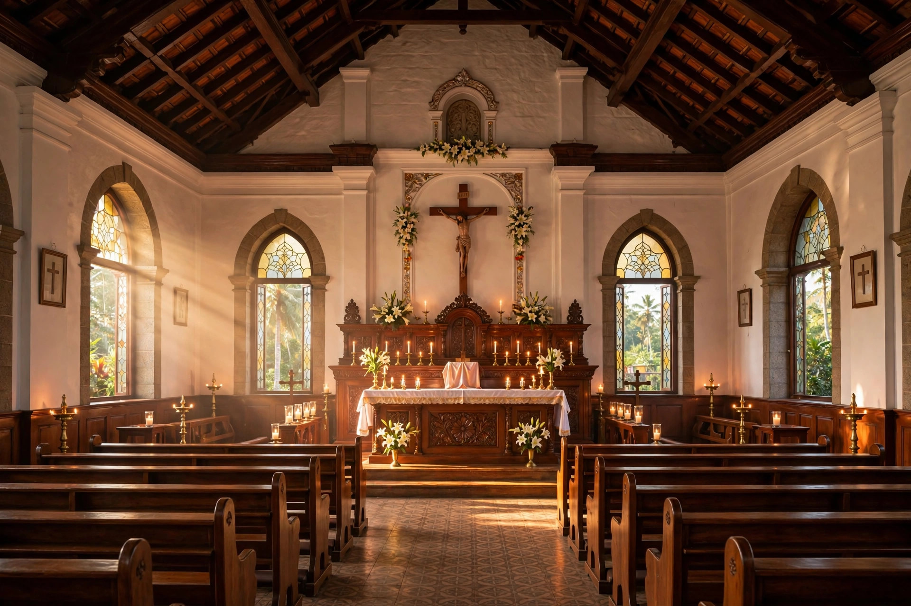
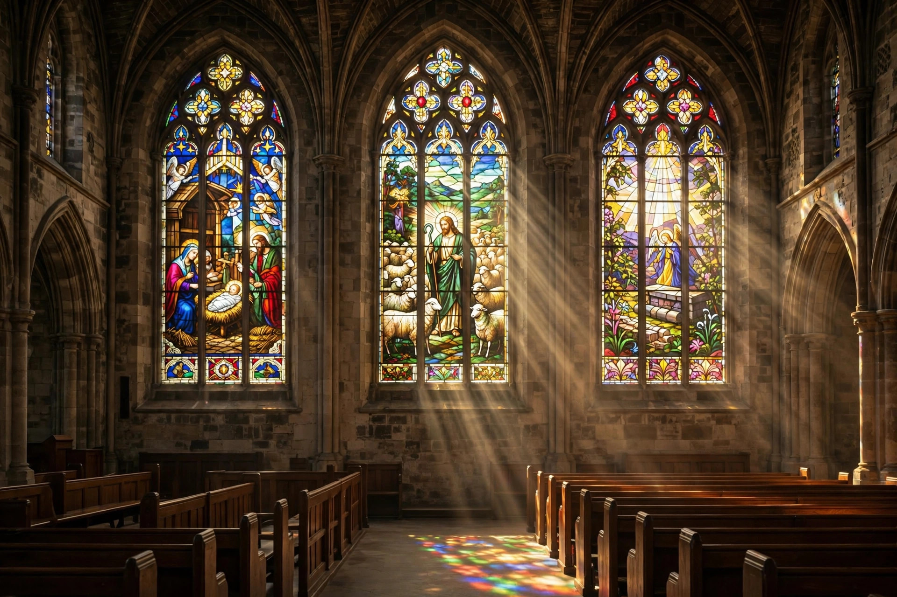
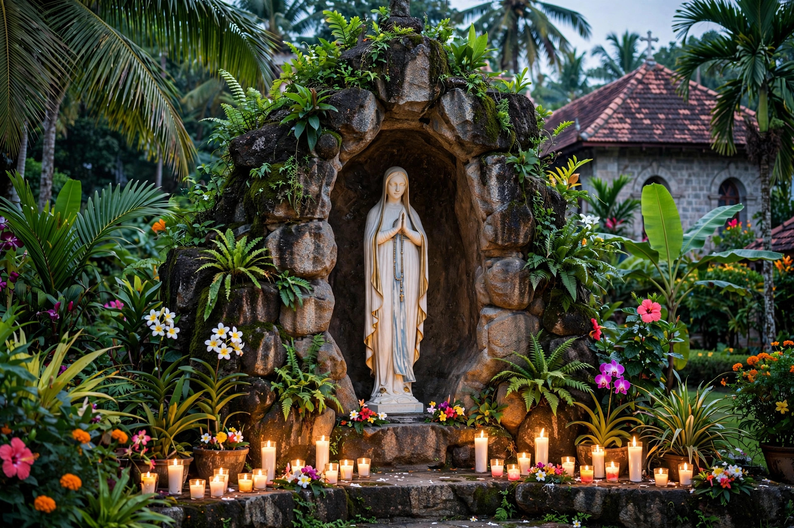

Guided in Faith, Serving in Love
This is the central hub where the behind-the-scenes life of our parish is cared for. Our administrative team works diligently to keep worship, events, communication and the upkeep of our church running smoothly. If you have questions, need support, or wish to get involved, please reach out — your participation is integral to the growth of our church family.
"And he gave some as apostles, and some as prophets, and some as evangelists, and some as pastors and teachers." — Ephesians 4:11
Our Hierarchy
The shepherds who guide our universal, major-archiepiscopal and diocesan Church

Pope Leo XIV
Supreme Pontiff of the Universal Church

Mar Raphael Thattil
Major Archbishop of the Syro-Malabar Church

Mar George Madathikandathil
Bishop of Kothamangalam
Thodupuzha Forane
St. Sebastian Forane Church, Thodupuzha — our forane parish
Parish Administration
Those who serve our parish day by day
Parish Priest
For appointments, Mass intentions and parish matters, please contact the parish office:
+91 4862 258 257
Assistant Parish Priest
Assists the vicar in pastoral care, liturgy and parish ministries.
+91 4862 258 257

Parish Office
Certificates, Mass intentions, registers and parish records.
+91 4862 258 257
Sacristan
Care of the church, sacristy and liturgical preparations.

Parish Trustees
Elected trustees who steward the temporal goods of the parish alongside the vicar.
Names and contact details of office bearers will be updated here — please contact the parish office for the current list.
Phone
Address
Kolapra – Thalayanadu Road,
Thalayanadu, Idukki, Kerala 685585
Visit
6:00 AM – 8:00 PM
Mon – Sun